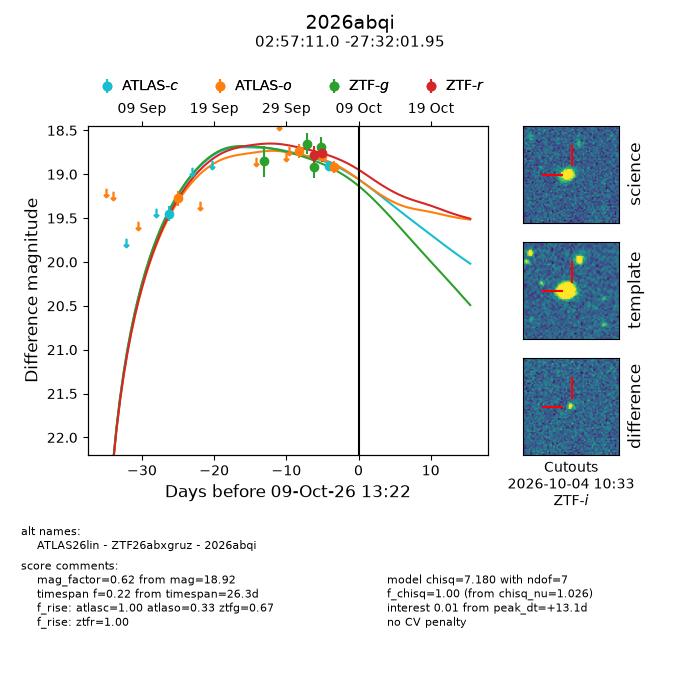
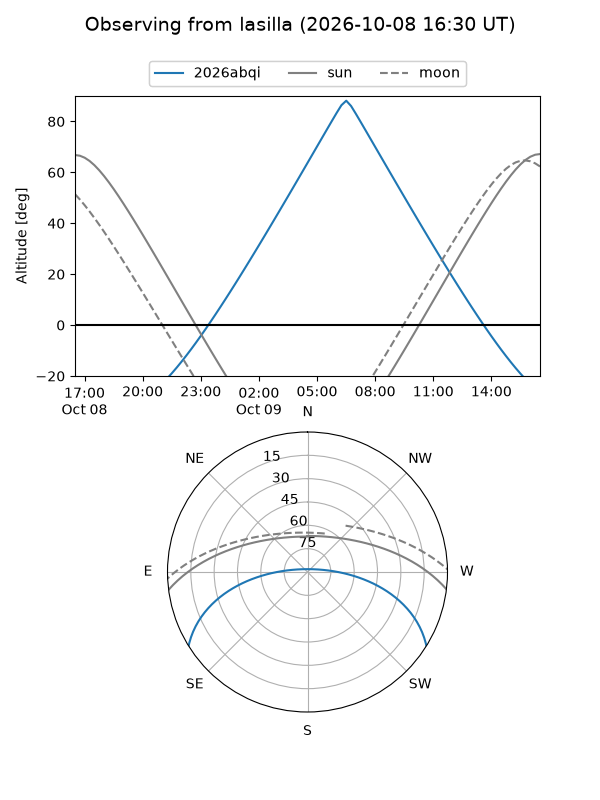
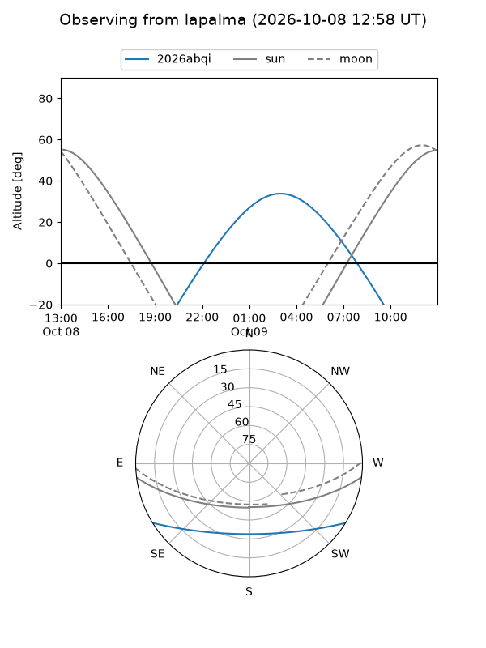
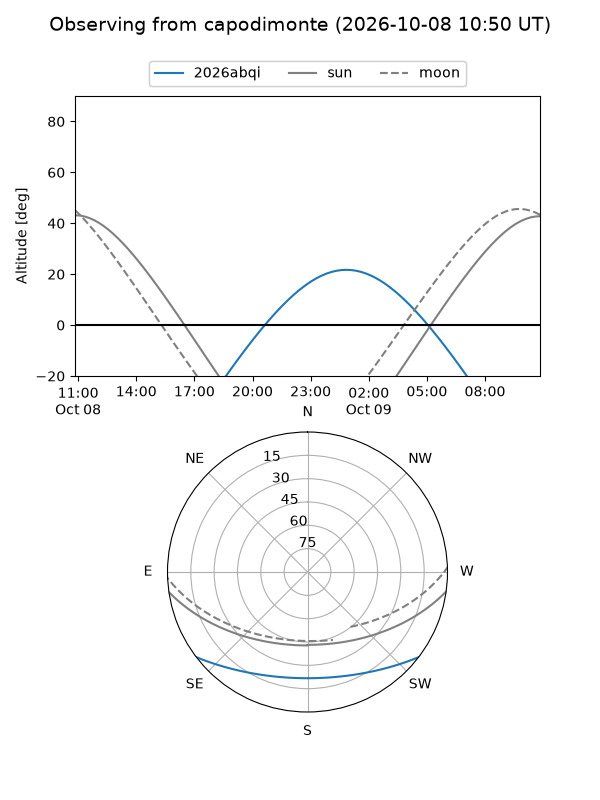
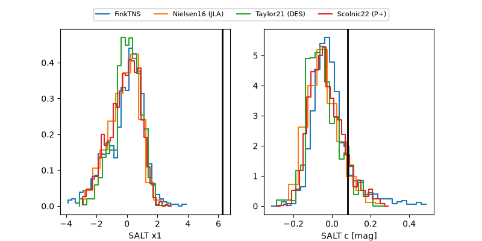

2026abqi
Target 2026abqi at 2026-10-09 13:25
Aliases and brokers:
FINK-ZTF: ztf.fink-portal.org/ZTF26abxgruz
Lasair-ZTF: lasair-ztf.lsst.ac.uk/objects/ZTF26abxgruz
ALeRCE-ZTF: alerce.online/object/ZTF26abxgruz
YSE-PZ: ziggy.ucolick.org/yse/transient_detail/2026abqi
TNS name: wis-tns.org/object/2026abqi
Direct TNS query: direct search
alt names
ZTF26abxgruz (ztf,fink_ztf)
2026abqi (tns,yse)
ATLAS26lin (atlas)
Coordinates:
equatorial (ra, dec) = 44.2959,-27.53388
equatorial (HMS+DMS) = 02:57:11.01,-27:32:01.95
galactic (l, b) = (221.1057,-62.14561)
Flags:
peak dt: +13.1
Photometry:
last atlasc=18.90, atlaso=18.92, ztfg=18.68, ztfr=18.76
2 atlasc, 4 atlaso, 4 ztfg, 2 ztfr detections
Lightcurve

Visibility



Additional plots
